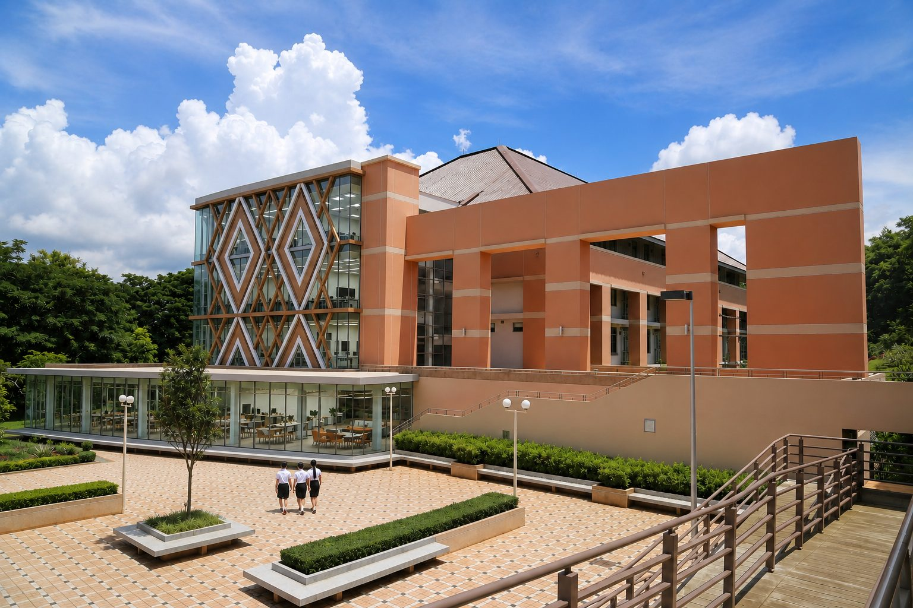

ผังการใช้พื้นที่อาคาร ๔ ชั้น ชั้นละประมาณ ๔๐๐ ตารางเมตร สำหรับศูนย์ MFU-ARIC ประกอบด้วยแนวคิดการออกแบบรายชั้น รายการห้อง ขนาดพื้นที่ ประเด็นที่ต้องตัดสินใจ และประมาณการค่าใช้จ่ายเบื้องต้น

ศูนย์ ARIC ต้องทำ ๔ หน้าที่ที่ขัดแย้งกันในอาคารเดียว คือ ต้อนรับบุคคลภายนอก · ฝึกอบรมจำนวนมาก · วิจัยที่ต้องควบคุมการเข้าถึง · และบริหารจัดการศูนย์ จึงจัดวางเป็นลำดับชั้นของการเข้าถึง เพื่อให้ผู้มาเยือนไม่ต้องเดินผ่านพื้นที่วิจัย และนักวิจัยไม่ถูกรบกวนจากคณะเยี่ยมชม
พื้นที่ใช้สอยสุทธิชั้นละ ~๓๔๐ ตร.ม. (หักพื้นที่แกนกลางอาคารประมาณ ๑๕ %)
ชั้นล่างที่คนแปลกหน้าเดินเข้ามาได้ ทุกพื้นที่ออกแบบให้เข้าได้โดยไม่ต้องขออนุญาต และเข้าใจได้โดยไม่ต้องมีคนอธิบาย ทำหน้าที่ระดมทุน ดึงดูดบุคลากร และสร้างพันธมิตร
| ห้อง | ตร.ม. | ความจุ | หน้าที่หลัก |
|---|---|---|---|
| โถงต้อนรับและพื้นที่จัดแสดง | 35 | — | ลงทะเบียนผู้มาเยือน นิทรรศการผลงาน หุ่นยนต์ฮิวแมนนอยด์บนแท่นสาธิต |
| เวทีนำเสนอผลงาน | 105 | 100–120 | Demo Day สัมมนา แถลงข่าว · พื้นเรียบ เก้าอี้เลื่อนเก็บ ปรับเป็นพื้นที่สาธิตหุ่นยนต์ได้ |
| พื้นที่ทำงานร่วม บ่มเพาะ และมุมสาธิตสังคมสูงวัย | 79 | 20 โต๊ะ | ทีมสตาร์ทอัพประจำศูนย์ นักศึกษาผู้ก่อตั้ง เช่าโต๊ะรายเดือน · รวมมุมสาธิตการใช้ชีวิตจริงสำหรับสาขาเรือธงด้านสุขภาพ (จำลองที่พักอาศัย ตรวจจับการล้ม หุ่นยนต์ช่วยเหลือ) กั้นด้วยฉาก/ม่านเมื่อใช้ถ่ายทำหรือรับรองพันธมิตร |
| ห้องประชุมย่อย ×๓ | 42 | 6–8 | จองใช้ได้ทั่วไป · ๑ ห้องเป็นห้องสัมภาษณ์/สื่อ |
| มุมสร้างชิ้นงาน | 30 | 8 | พิมพ์สามมิติ ประกอบวงจร ทำต้นแบบ · อยู่ระดับพื้นดินเพื่อการขนของและระบายอากาศ |
| ร้านกาแฟและพื้นที่พบปะ | 20 | 16 | พื้นที่พบปะไม่เป็นทางการ · พื้นที่พักของผู้เข้าอบรมชั้น ๒ |
| บูธเก็บเสียง ×๔ | 13 | 1/บูธ | คุยกับนักลงทุน สัมภาษณ์ออนไลน์ · ๑ บูธรองรับผู้ใช้รถเข็น |
| ทางสัญจร ห้องน้ำผู้พิการ ที่เก็บของ | 16 | — | — |
| รวมพื้นที่สุทธิ | 340 |
ห้องฝึกอบรม ๖ ห้อง ห้องละ ๔๖ ตร.ม. จัดเป็น ๒ แถว แถวละ ๓ ห้อง มีทางเดินกลาง · แต่ละห้องรองรับ ๒๐ ที่นั่งแบบบรรยาย หรือ ๑๒ คนแบบปฏิบัติการ · ผนังเลื่อนกันเสียงแถวละ ๒ ชุด เปิดรวมทั้งแถวได้เป็น ๑๓๘ ตร.ม. = ๖๐ ที่นั่ง และรองรับรวมทั้งชั้น ๑๒๐ คน · ผังนี้ให้ห้องเฉพาะทางถาวรครบ คือ เครือข่าย ๒ ห้อง ไฟฟ้า ๒ ห้อง คอมพิวเตอร์ ๒ ห้อง
| ห้อง | แถว | ตร.ม. | ความจุ | หน้าที่หลัก |
|---|---|---|---|---|
| ห้องปฏิบัติการคอมพิวเตอร์ A | A | 46 | 20 | เขียนโปรแกรม วิทยาการข้อมูล พื้นฐาน AI คลาวด์ · ใช้เป็นห้องสอบภายใต้การคุมสอบ ๑๕ ที่นั่งเว้นระยะ |
| ห้องฝึกอบรมเครือข่าย ๑ — โครงสร้างพื้นฐานและเส้นทาง | A | 46 | 20 | เดินสายมาตรฐาน สวิตช์ชิ่ง เราต์ติ้ง VLAN/QoS ไวร์เลส เข้าหัวไฟเบอร์ · ตู้ฝึก ๕ ชุด |
| ห้องฝึกอบรมเครือข่าย ๒ — ไซเบอร์เรนจ์ | A | 46 | 20 | ไฟร์วอลล์ NAC การแบ่งเขตเครือข่าย ฝึกรับมือภัยคุกคาม · แยกขาดจากเครือข่ายใช้งานจริง |
| ห้องปฏิบัติการคอมพิวเตอร์ B | B | 46 | 20 | ห้องแฝดของ A · หลักสูตรองค์กร อบรมเชิงปฏิบัติการ และการสอบรอบคู่ขนาน |
| ห้องฝึกอบรมไฟฟ้า ๑ — ไฟฟ้าและระบบควบคุมพื้นฐาน | B | 46 | 12 | เดินสาย ระบบจ่ายไฟ ๑/๓ เฟส วงจรควบคุมมอเตอร์ การต่อลงดิน ความปลอดภัยทางไฟฟ้า · โต๊ะปฏิบัติการ ๖ ชุด |
| ห้องฝึกอบรมไฟฟ้า ๒ — ระบบอัตโนมัติและ PLC | B | 46 | 12 | PLC/HMI ชุดขับมอเตอร์ นิวแมติกส์ เครือข่ายอุตสาหกรรม อินเตอร์ล็อกนิรภัย · ต่อระบบไฟฟ้าเซลล์หุ่นยนต์ |
| ห้องเก็บวัสดุและชุดฝึก | — | 22 | — | วัสดุสิ้นเปลืองของชั้น + ชุดฝึกและเครื่องมือวัดที่ใช้ร่วมกัน · ตู้กันไฟสำหรับแบตเตอรี่ |
| ห้องเตรียมการสอนและควบคุม | — | 9 | 3 | ฐานปฏิบัติงานผู้สอน · จุดควบคุมไฟฟ้าหลักและปุ่มหยุดฉุกเฉิน |
| ทางเดินกลาง ล็อกเกอร์ ปล่องงานระบบ | — | 33 | — | ทางเดินกลางระหว่างสองแถว · เส้นทางหนีไฟ ๒ ทาง |
| รวมพื้นที่สุทธิ | 340 | 120 ทั้งชั้น |
ชั้นที่มีข้อกำหนดทางเทคนิคสูงสุด รวมสภาพแวดล้อม ๔ แบบที่ขัดแย้งกันเอง — ห้องเครื่องที่ต้องเย็นและ รับน้ำหนักมาก · งานหุ่นยนต์ที่ต้องการพื้นโล่งและความสูง · สตูดิโอที่ต้องการความเงียบ · และงานวิจัยบนเวิร์กสเตชัน จึงวางให้ด้านหนักและเสียงดังอยู่ปลายหนึ่ง ด้านเงียบอยู่อีกปลายหนึ่ง
| ห้อง | ตร.ม. | ความจุ | หน้าที่หลัก |
|---|---|---|---|
| ห้องเครื่องคอมพิวเตอร์แม่ข่ายและ GPU | 55 | 2 | คลัสเตอร์ GPU · เครื่องแม่ข่าย HPC · จัดเก็บข้อมูล · แกนเครือข่ายและไฟร์วอลล์ · ตู้แร็ค ๖ ตู้ ออกแบบรองรับ ๖๐ kW |
| ห้องปฏิบัติการวิจัยปัญญาประดิษฐ์ | 68 | 16 + 6 | ที่นั่งวิจัยและพัฒนาโมเดล · เวิร์กสเตชัน AI ๑๒ เครื่อง + เครื่องตั้งโต๊ะสมรรถนะสูง · รวมมุมสาธิต AI กั้นกระจกด้านทางเดิน แสดงสถานะคลัสเตอร์และการสาธิตเอเจนต์/LLM ให้คณะเยี่ยมชมดูได้โดยไม่ต้องเข้าห้อง |
| สนามหุ่นยนต์และอากาศยานไร้คนขับ | 100 | 16 | สนามรวมผืนเดียว · ตาข่ายเลื่อนแบ่งเป็นปริมาตรบิน ~35 ตร.ม. และพื้นหุ่นยนต์ ~65 ตร.ม. · ความสูงโล่ง ≥ ๔ ม. |
| ชุดห้องสตูดิโอสื่อผสม | 83 | 10 | ห้องฉากเขียว ๓๖ · ห้องบันทึกเสียง ๘ · ห้องควบคุม/ตัดต่อ ๒๐ · ห้องพอดแคสต์และสาธิต XR ๑๙ |
| ห้องเก็บวัสดุ | 12 | — | อะไหล่หุ่นยนต์ เส้นใยพิมพ์ แบตเตอรี่ วัสดุงานสื่อ · ตู้กันไฟสำหรับ LiPo |
| ทางสัญจร ห้องกันอากาศ ปล่องงานระบบ | 22 | — | — |
| รวมพื้นที่สุทธิ | 340 |
ภาพลักษณ์ทางวิชาชีพของศูนย์ และเป็นชั้นเดียวที่มีงานที่เป็นความลับ — สัญญา ทรัพย์สินทางปัญญา การเจรจากับพันธมิตร งบประมาณ และงานบุคคล มีห้องประชุมระดับกรรมการเพื่อให้กรรมการสภาฯ และพันธมิตรมาเยือนได้โดยไม่ต้องเดินผ่านห้องปฏิบัติการ
| ห้อง | ตร.ม. | ความจุ | หน้าที่หลัก |
|---|---|---|---|
| ห้องผู้อำนวยการ · รองผู้อำนวยการ ×๒ | 44 | 3 | ห้องทำงานผู้บริหารศูนย์พร้อมโต๊ะประชุมขนาดเล็ก |
| พื้นที่ทำงานส่วนกลาง | 114 | 26–28 | บุคลากรวิจัย วิศวกร ผู้จัดการโครงการ ช่างเทคนิค · เผื่อขยายถึง ~๓๕ คน |
| บูธเก็บเสียง ×๔ | 12 | 1/บูธ | โทรศัพท์ สัมภาษณ์ออนไลน์ งานที่ต้องใช้สมาธิ |
| ห้องประชุมผู้บริหาร | 45 | 18–20 | กรรมการสภาฯ คณะกรรมการอำนวยการ การเจรจาพันธมิตร พิธีลงนาม |
| ห้องประชุมย่อย ×๒ | 30 | 8 | ประชุมโครงการประจำวัน |
| ห้องปฏิบัติการโครงการและที่ปรึกษา | 20 | 8 | งานลูกค้าและทรัพย์สินทางปัญญา · เอกสารลับอยู่ในห้องเท่านั้น |
| ห้องทำงานนักวิจัยรับเชิญและพันธมิตร | 20 | 6 | ศาสตราจารย์รับเชิญ บุคลากรภาคอุตสาหกรรม พันธมิตรต่างประเทศ |
| ธุรการ การเงินและพัสดุ · ห้องเก็บเอกสารสำคัญ | 35 | 5–6 | บริหารทุน งานพัสดุ ทะเบียนสินทรัพย์ · สัญญาและเอกสารสิทธิบัตร |
| ห้องพักบุคลากร | 20 | 12 | พื้นที่พัก เพื่อไม่ให้มีอาหารในห้องปฏิบัติการ |
| รวมพื้นที่สุทธิ | 340 |
สามประเด็นนี้กำหนดว่าแผนนี้ก่อสร้างได้จริง มีเงินทำ และมีขนาดเท่าใด
ชั้น ๓ ตามโจทย์ ต้องเสริมกำลังพื้นและมีลิฟต์ขนของขนาดใหญ่ · หรือย้ายลงชั้น ๑ ด้านหลัง ซึ่งง่ายกว่าแต่กินพื้นที่หน้าอาคาร ~๕๕ ตร.ม.
เสนอ: ชั้น ๓ โดยมีเงื่อนไขว่าผลสำรวจโครงสร้างและลิฟต์ผ่าน หากไม่ผ่านให้ถอยไปชั้น ๑ ซึ่งไม่กระทบสมรรถนะ
คำขอตามแบบ MDES วงเงิน ๕๗๕ ล้านบาท เป็นงบครุภัณฑ์และค่าดำเนินงานเท่านั้น ได้ตัดค่าปรับปรุงอาคารออกทั้งหมดแล้ว
ต้องได้คำตอบก่อนเสนอสภาฯ เพราะครุภัณฑ์ ๑๕๐ ล้านบาทใช้งานไม่ได้เลย หากอาคารยังไม่พร้อม
ผัง ๖ ห้องให้ห้องเฉพาะทางถาวรครบตามที่กำหนด แลกกับชั้นเรียนเดี่ยวสูงสุด ๒๐ คน (เปิดผนังรวมทั้งแถวได้ ๖๐ คน · รวมทั้งชั้น ๑๒๐ คน)
ขอให้ยืนยันว่าชั้นเรียนเดี่ยว ๒๐ คนเพียงพอต่อรูปแบบหลักสูตรที่วางไว้ · หากต้องการห้องเดี่ยว ๖๐ ที่นั่งจริง ต้องกลับไปใช้ผัง ๒ ห้องใหญ่ ซึ่งเหลือห้องเฉพาะทางเพียง ๒ ห้อง